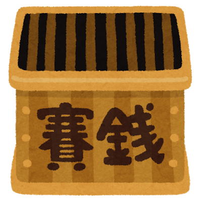
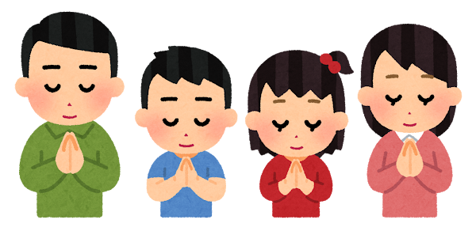

參拜方式参拝
先在手水舍淨手，再到拜殿依「二拜二拍手一拜」行禮
是什麼
到神社參拜時，一般分成兩個部分：先在手水舍清潔雙手和口，再到拜殿前行禮祈願[1]。
一、手水舍：淨手
- 洗左手：右手拿水勺，舀水沖洗左手。
- 洗右手：換左手拿水勺，沖洗右手。
- 漱口：再換右手拿水勺，把水倒在左手掌，用手掌裡的水漱口，嘴巴不要直接碰水勺。
- 收尾：再沖洗一次左手，依現場指示放回水勺。
有些神社改用流水式設施，或暫停提供漱口用水，照現場說明淨手就好[1]。
二、拜殿：行禮


旅遊網站另外提到，走參道時要靠左或靠右，中央是神明通行的路[2]（僅單一旅遊網站資料）。
跟三位神祇的關係
「二拜二拍手一拜」是一般神社常見的作法，但不是每間神社都拍兩次手，現場有不同指示時跟著做就好[1]。
稻荷神、天神的神社有沒有特別的拜法：待補資料。
例子
見上方宇佐神宮的四拍手。
來源
- 包到位，〈日本神社怎麼拜？參拜順序、手水舍洗法與二拜二拍手一拜教學〉
- japantravel.co，〈【宇佐神宮】完整參拜攻略：交通+歷史+禮儀全解析（2026更新）〉
- Chole 在九州，〈宇佐神宮 2026：由上宮三殿走到下宮的完整參拜遊記〉